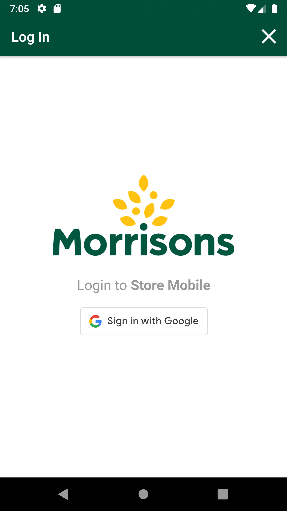
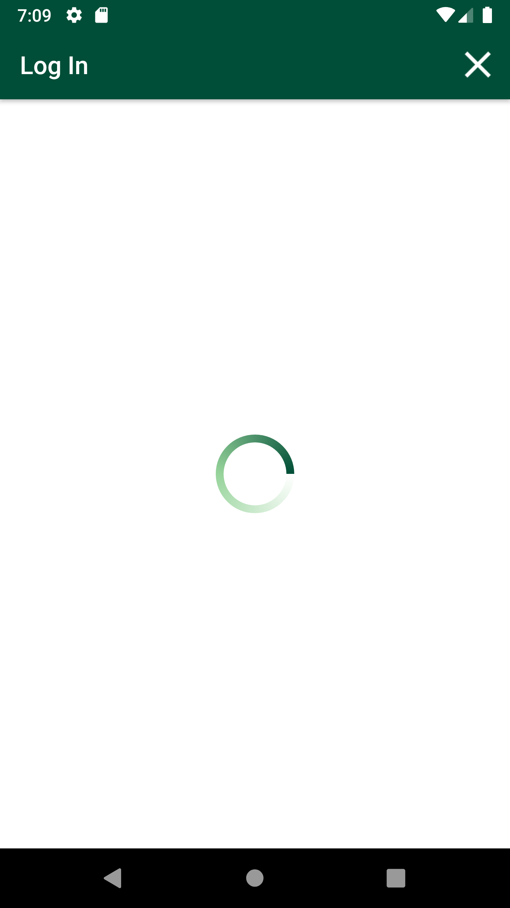
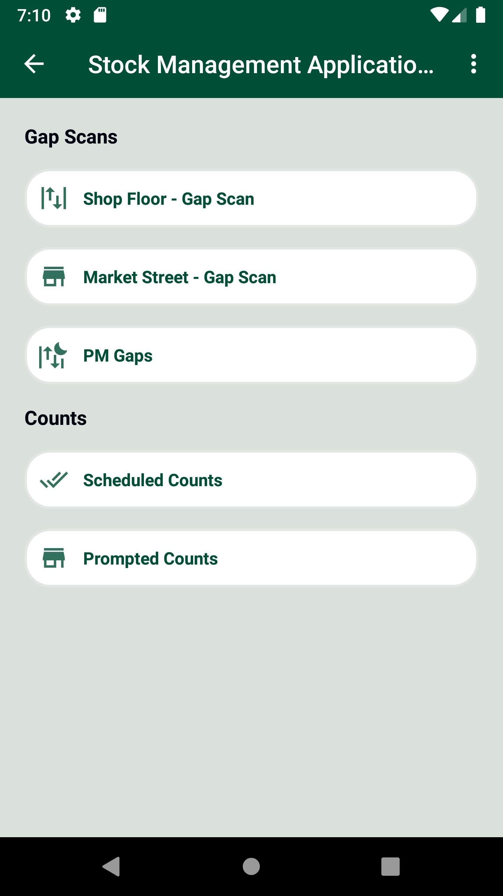
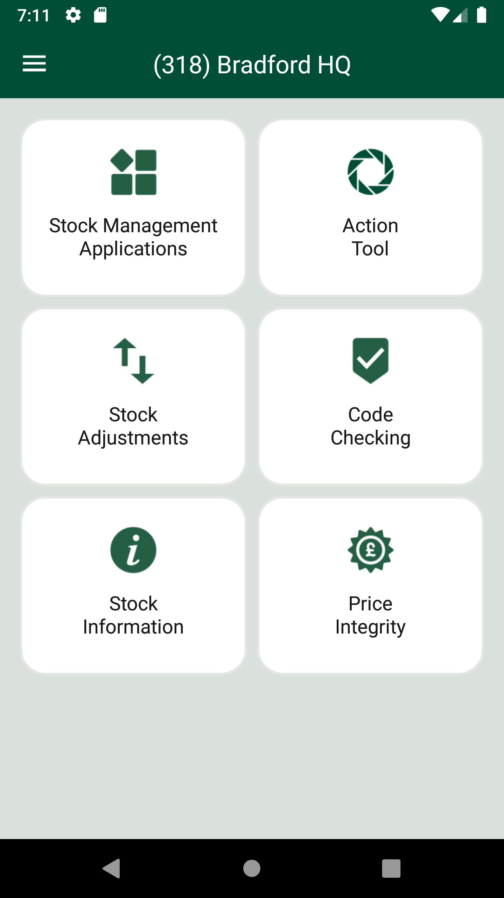
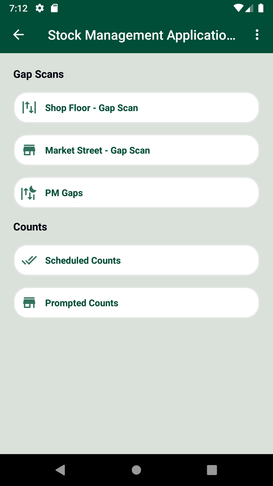

-
GlhBurst functionality
12:17:09 PM / 00:16:24:573 Fail
GlhBurst functionality
12.19.2023 12:17:09 PM 12.19.2023 12:33:34 PM 00:16:24:573 · #test-id=1@Newglh_burst_701PassTO CHANGE THE DEVICE TIMINGS AS REQUIREDPassTO CHANGE THE DEVICE TIMINGS AS REQUIREDGiven I send the time "07" and mins "00" and meridiem "am" and current date in listThen I Change timeThen I Change dateFailDelete GLH Storewalk from ServiceFailDelete GLH Storewalk from ServiceGiven Request is made to SMA app login service for collegue userThen Service should return details for SMA app Login Servicecom.morrisons.common.action.Hook.afterScenario(io.cucumber.java.Scenario)And Get the generated Access Tocken for SMA app Login ServiceStep skippedGiven Get request is made to Get storewalks service for current dateStep skippedAnd Get Operation perform on service requestStep skippedThen Verify Get storewalks service response for current dateStep skippedThen Delete request is made to Delete GLH storewalk for store id "8"Step skippedFailDelete GLH Storewalk from ServiceGiven Request is made to SMA app login service for collegue userThen Service should return details for SMA app Login Servicecom.morrisons.common.action.Hook.afterScenario(io.cucumber.java.Scenario) And Get the generated Access Tocken for SMA app Login ServiceStep skippedGiven Get request is made to Get storewalks service for current dateStep skippedAnd Get Operation perform on service requestStep skippedThen Verify Get storewalks service response for current dateStep skippedThen Delete request is made to Delete GLH storewalk for store id "8"Step skippedPassScan products in fixture and marked as GAP and COUNT.PassScan products in fixture and marked as GAP and COUNT.When I enter Username and Password for SMA Collegue userAnd I click on login button for SMAThen I click on 'stockMngmtText' on page 'HomePagePO_New'Then I click on "Shop Floor - Gap Scan"Then I click on Fixture ScanAnd I click on barcode entry ButtonThen Enter "107514491" numberAnd I click on GAP buttonAnd I will capture the product name from view listAnd I click on barcode entry ButtonThen Enter "109154185" numberAnd I click on COUNT buttonAnd I enter quantity "2" for fixture and warehouseAnd I choose the plan from popup if multiple records presentAnd I will capture the product name from view listAnd I click on barcode entry ButtonThen Enter "100162509" numberAnd I click on dynamic "sLocatorName" "COUNT" on page 'GapsLowsHighsPO'And I enter quantity "2" for fixture and warehouseAnd I choose the plan from popup if multiple records presentAnd I will capture the product name from view listAnd I click on Back ButtonFailSMA-20454_To verify Get storewalk API response is correct when sent without attributes.FailSMA-20454_To verify Get storewalk API response is correct when sent without attributes.Given Request is made to SMA app login service for collegue userThen Service should return details for SMA app Login Servicecom.morrisons.common.action.Hook.afterScenario(io.cucumber.java.Scenario)
And Get the generated Access Tocken for SMA app Login ServiceStep skippedGiven Get request is made to Get storewalks service for current dateStep skippedAnd Get Operation perform on service requestStep skippedThen Verify Get storewalks service response for current dateStep skippedThen Delete request is made to Delete GLH storewalk for store id "8"Step skippedPassScan products in fixture and marked as GAP and COUNT.PassScan products in fixture and marked as GAP and COUNT.When I enter Username and Password for SMA Collegue userAnd I click on login button for SMAThen I click on 'stockMngmtText' on page 'HomePagePO_New'Then I click on "Shop Floor - Gap Scan"Then I click on Fixture ScanAnd I click on barcode entry ButtonThen Enter "107514491" numberAnd I click on GAP buttonAnd I will capture the product name from view listAnd I click on barcode entry ButtonThen Enter "109154185" numberAnd I click on COUNT buttonAnd I enter quantity "2" for fixture and warehouseAnd I choose the plan from popup if multiple records presentAnd I will capture the product name from view listAnd I click on barcode entry ButtonThen Enter "100162509" numberAnd I click on dynamic "sLocatorName" "COUNT" on page 'GapsLowsHighsPO'And I enter quantity "2" for fixture and warehouseAnd I choose the plan from popup if multiple records presentAnd I will capture the product name from view listAnd I click on Back ButtonFailSMA-20454_To verify Get storewalk API response is correct when sent without attributes.FailSMA-20454_To verify Get storewalk API response is correct when sent without attributes.Given Request is made to SMA app login service for collegue userThen Service should return details for SMA app Login Servicecom.morrisons.common.action.Hook.afterScenario(io.cucumber.java.Scenario) And Get the generated Access Tocken for SMA app Login ServiceStep skippedGiven Post request is made to Create storewalk service for store id "8" and type "GapsHighsLows"Step skippedAnd Post Operation perform on service requestStep skippedThen Verify Create storewalk service responseStep skippedAnd Get request is made to Get storewalk service for store id "8"Step skippedThen Get Operation perform on service requestStep skippedThen Verify Get storewalk service responseStep skippedThen I verify storewalk responseStep skippedFailSMA-20454_To verify Get storewalk API response is correct when sent with attributes.FailSMA-20454_To verify Get storewalk API response is correct when sent with attributes.Given Request is made to SMA app login service for collegue userThen Service should return details for SMA app Login Servicecom.morrisons.common.action.Hook.afterScenario(io.cucumber.java.Scenario)
And Get the generated Access Tocken for SMA app Login ServiceStep skippedGiven Post request is made to Create storewalk service for store id "8" and type "GapsHighsLows"Step skippedAnd Post Operation perform on service requestStep skippedThen Verify Create storewalk service responseStep skippedAnd Get request is made to Get storewalk service for store id "8"Step skippedThen Get Operation perform on service requestStep skippedThen Verify Get storewalk service responseStep skippedThen I verify storewalk responseStep skippedFailSMA-20454_To verify Get storewalk API response is correct when sent with attributes.FailSMA-20454_To verify Get storewalk API response is correct when sent with attributes.Given Request is made to SMA app login service for collegue userThen Service should return details for SMA app Login Servicecom.morrisons.common.action.Hook.afterScenario(io.cucumber.java.Scenario)
And Get the generated Access Tocken for SMA app Login ServiceStep skippedGiven Post request is made to Create storewalk service for store id "8" and type "GapsHighsLows"Step skippedAnd Post Operation perform on service requestStep skippedThen Verify Create storewalk service responseStep skippedAnd Get request is made to Get storewalk service for store id "8" and attributesStep skippedThen Get Operation perform on service requestStep skippedThen Verify Get storewalk service responseStep skippedThen I verify storewalk responseStep skippedFailSMA-20454_To verify as per below mentioned values in new attribute Capturetype['High'] are excluded from the Get Storewalk API response.Capturetype[ne]=['High']FailSMA-20454_To verify as per below mentioned values in new attribute Capturetype['High'] are excluded from the Get Storewalk API response.Capturetype[ne]=['High']Given Request is made to SMA app login service for collegue userThen Service should return details for SMA app Login Servicecom.morrisons.common.action.Hook.afterScenario(io.cucumber.java.Scenario) And Get the generated Access Tocken for SMA app Login ServiceStep skippedGiven Post request is made to Create storewalk service for store id "8" and type "GapsHighsLows"Step skippedAnd Post Operation perform on service requestStep skippedThen Verify Create storewalk service responseStep skippedAnd Get request is made to Get storewalk service for store id "8" and capture type "High"Step skippedThen Get Operation perform on service requestStep skippedThen Verify Get storewalk service responseStep skippedAnd I verify Capturetype attribute is excluded from the Get Storewalk API responseStep skippedFailSMA-20454_To verify as per below mentioned values in new attribute Capturetype['Low'] are excluded from the Get Storewalk API response.Capturetype[ne]=['Low']FailSMA-20454_To verify as per below mentioned values in new attribute Capturetype['Low'] are excluded from the Get Storewalk API response.Capturetype[ne]=['Low']Given Request is made to SMA app login service for collegue userThen Service should return details for SMA app Login Servicecom.morrisons.common.action.Hook.afterScenario(io.cucumber.java.Scenario)
And Get the generated Access Tocken for SMA app Login ServiceStep skippedGiven Post request is made to Create storewalk service for store id "8" and type "GapsHighsLows"Step skippedAnd Post Operation perform on service requestStep skippedThen Verify Create storewalk service responseStep skippedAnd Get request is made to Get storewalk service for store id "8" and capture type "High"Step skippedThen Get Operation perform on service requestStep skippedThen Verify Get storewalk service responseStep skippedAnd I verify Capturetype attribute is excluded from the Get Storewalk API responseStep skippedFailSMA-20454_To verify as per below mentioned values in new attribute Capturetype['Low'] are excluded from the Get Storewalk API response.Capturetype[ne]=['Low']FailSMA-20454_To verify as per below mentioned values in new attribute Capturetype['Low'] are excluded from the Get Storewalk API response.Capturetype[ne]=['Low']Given Request is made to SMA app login service for collegue userThen Service should return details for SMA app Login Servicecom.morrisons.common.action.Hook.afterScenario(io.cucumber.java.Scenario) And Get the generated Access Tocken for SMA app Login ServiceStep skippedGiven Post request is made to Create storewalk service for store id "8" and type "GapsHighsLows"Step skippedAnd Post Operation perform on service requestStep skippedThen Verify Create storewalk service responseStep skippedAnd Get request is made to Get storewalk service for store id "8" and capture type "Low"Step skippedThen Get Operation perform on service requestStep skippedThen Verify Get storewalk service responseStep skippedThen I verify storewalk responseStep skippedAnd I verify Capturetype attribute is excluded from the Get Storewalk API responseStep skippedFailSMA-20454_To verify as per below mentioned values in new attribute Capturetype['Gap'] are excluded from the Get Storewalk API response.Capturetype[ne]=['Gap']FailSMA-20454_To verify as per below mentioned values in new attribute Capturetype['Gap'] are excluded from the Get Storewalk API response.Capturetype[ne]=['Gap']Given Request is made to SMA app login service for collegue userThen Service should return details for SMA app Login Servicecom.morrisons.common.action.Hook.afterScenario(io.cucumber.java.Scenario)
And Get the generated Access Tocken for SMA app Login ServiceStep skippedGiven Post request is made to Create storewalk service for store id "8" and type "GapsHighsLows"Step skippedAnd Post Operation perform on service requestStep skippedThen Verify Create storewalk service responseStep skippedAnd Get request is made to Get storewalk service for store id "8" and capture type "Low"Step skippedThen Get Operation perform on service requestStep skippedThen Verify Get storewalk service responseStep skippedThen I verify storewalk responseStep skippedAnd I verify Capturetype attribute is excluded from the Get Storewalk API responseStep skippedFailSMA-20454_To verify as per below mentioned values in new attribute Capturetype['Gap'] are excluded from the Get Storewalk API response.Capturetype[ne]=['Gap']FailSMA-20454_To verify as per below mentioned values in new attribute Capturetype['Gap'] are excluded from the Get Storewalk API response.Capturetype[ne]=['Gap']Given Request is made to SMA app login service for collegue userThen Service should return details for SMA app Login Servicecom.morrisons.common.action.Hook.afterScenario(io.cucumber.java.Scenario) And Get the generated Access Tocken for SMA app Login ServiceStep skippedGiven Post request is made to Create storewalk service for store id "8" and type "GapsHighsLows"Step skippedAnd Post Operation perform on service requestStep skippedThen Verify Create storewalk service responseStep skippedAnd Get request is made to Get storewalk service for store id "8" and capture type "Gap"Step skippedThen Get Operation perform on service requestStep skippedThen Verify Get storewalk service responseStep skippedThen I verify storewalk responseStep skippedAnd I verify Capturetype attribute is excluded from the Get Storewalk API responseStep skippedFailSMA-20454_To verify as per below mentioned values in new attribute Capturetype['High','Low'] are excluded from the Get Storewalk API response.Capturetype[ne]=['High','Low']FailSMA-20454_To verify as per below mentioned values in new attribute Capturetype['High','Low'] are excluded from the Get Storewalk API response.Capturetype[ne]=['High','Low']Given Request is made to SMA app login service for collegue userThen Service should return details for SMA app Login Servicecom.morrisons.common.action.Hook.afterScenario(io.cucumber.java.Scenario)And Get the generated Access Tocken for SMA app Login ServiceStep skippedGiven Post request is made to Create storewalk service for store id "8" and type "GapsHighsLows"Step skippedAnd Post Operation perform on service requestStep skippedThen Verify Create storewalk service responseStep skippedAnd Get request is made to Get storewalk service for store id "8" and capture type "High','Low"Step skippedThen Get Operation perform on service requestStep skippedThen Verify Get storewalk service responseStep skippedThen I verify storewalk responseStep skippedAnd I verify Capturetype attribute is excluded from the Get Storewalk API responseStep skippedFailSMA-20454_To verify as per below mentioned values in new attribute Capturetype['High','Low','Gap'] are excluded from the Get Storewalk API response.Capturetype[ne]=['High','Low','Gap']FailSMA-20454_To verify as per below mentioned values in new attribute Capturetype['High','Low','Gap'] are excluded from the Get Storewalk API response.Capturetype[ne]=['High','Low','Gap']Given Request is made to SMA app login service for collegue userThen Service should return details for SMA app Login Servicecom.morrisons.common.action.Hook.afterScenario(io.cucumber.java.Scenario)And Get the generated Access Tocken for SMA app Login ServiceStep skippedGiven Post request is made to Create storewalk service for store id "8" and type "GapsHighsLows"Step skippedAnd Post Operation perform on service requestStep skippedThen Verify Create storewalk service responseStep skippedAnd Get request is made to Get storewalk service for store id "8" and capture type "High','Low','Gap"Step skippedThen Get Operation perform on service requestStep skippedThen Verify Get storewalk service responseStep skippedThen I verify storewalk responseStep skippedAnd I verify Capturetype attribute is excluded from the Get Storewalk API responseStep skippedFailSMA-20455_To verify Get Section API response is correct after the code change.FailSMA-20455_To verify Get Section API response is correct after the code change.Given Request is made to SMA app login service for collegue userThen Service should return details for SMA app Login Servicecom.morrisons.common.action.Hook.afterScenario(io.cucumber.java.Scenario)
And Get the generated Access Tocken for SMA app Login ServiceStep skippedGiven Post request is made to Create storewalk service for store id "8" and type "GapsHighsLows"Step skippedAnd Post Operation perform on service requestStep skippedThen Verify Create storewalk service responseStep skippedAnd Get request is made to Get storewalk service for store id "8" and capture type "Gap"Step skippedThen Get Operation perform on service requestStep skippedThen Verify Get storewalk service responseStep skippedThen I verify storewalk responseStep skippedAnd I verify Capturetype attribute is excluded from the Get Storewalk API responseStep skippedFailSMA-20454_To verify as per below mentioned values in new attribute Capturetype['High','Low'] are excluded from the Get Storewalk API response.Capturetype[ne]=['High','Low']FailSMA-20454_To verify as per below mentioned values in new attribute Capturetype['High','Low'] are excluded from the Get Storewalk API response.Capturetype[ne]=['High','Low']Given Request is made to SMA app login service for collegue userThen Service should return details for SMA app Login Servicecom.morrisons.common.action.Hook.afterScenario(io.cucumber.java.Scenario)And Get the generated Access Tocken for SMA app Login ServiceStep skippedGiven Post request is made to Create storewalk service for store id "8" and type "GapsHighsLows"Step skippedAnd Post Operation perform on service requestStep skippedThen Verify Create storewalk service responseStep skippedAnd Get request is made to Get storewalk service for store id "8" and capture type "High','Low"Step skippedThen Get Operation perform on service requestStep skippedThen Verify Get storewalk service responseStep skippedThen I verify storewalk responseStep skippedAnd I verify Capturetype attribute is excluded from the Get Storewalk API responseStep skippedFailSMA-20454_To verify as per below mentioned values in new attribute Capturetype['High','Low','Gap'] are excluded from the Get Storewalk API response.Capturetype[ne]=['High','Low','Gap']FailSMA-20454_To verify as per below mentioned values in new attribute Capturetype['High','Low','Gap'] are excluded from the Get Storewalk API response.Capturetype[ne]=['High','Low','Gap']Given Request is made to SMA app login service for collegue userThen Service should return details for SMA app Login Servicecom.morrisons.common.action.Hook.afterScenario(io.cucumber.java.Scenario)And Get the generated Access Tocken for SMA app Login ServiceStep skippedGiven Post request is made to Create storewalk service for store id "8" and type "GapsHighsLows"Step skippedAnd Post Operation perform on service requestStep skippedThen Verify Create storewalk service responseStep skippedAnd Get request is made to Get storewalk service for store id "8" and capture type "High','Low','Gap"Step skippedThen Get Operation perform on service requestStep skippedThen Verify Get storewalk service responseStep skippedThen I verify storewalk responseStep skippedAnd I verify Capturetype attribute is excluded from the Get Storewalk API responseStep skippedFailSMA-20455_To verify Get Section API response is correct after the code change.FailSMA-20455_To verify Get Section API response is correct after the code change.Given Request is made to SMA app login service for collegue userThen Service should return details for SMA app Login Servicecom.morrisons.common.action.Hook.afterScenario(io.cucumber.java.Scenario) And Get the generated Access Tocken for SMA app Login ServiceStep skippedGiven Post request is made to Create storewalk service for store id "8" and type "GapsHighsLows"Step skippedAnd Post Operation perform on service requestStep skippedThen Verify Create storewalk service responseStep skippedGiven Post request is made to Create walkitem service for store id "8" and product id "100001478"Step skippedAnd Post Operation perform on service requestStep skippedThen Verify Create walkitem service responseStep skippedAnd Get request is made to Get storewalk service for store id "8"Step skippedThen Get Operation perform on service requestStep skippedThen Verify Get storewalk service responseStep skippedAnd Get request is made to Get section service for store id "8"Step skippedThen Get Operation perform on service requestStep skippedAnd Verify Get section service responseStep skippedFailSMA-20455_To verify as per below mentioned values in new attribute Capturetype['High'] are excluded from the Get Section API response.Capturetype[ne]=['High']FailSMA-20455_To verify as per below mentioned values in new attribute Capturetype['High'] are excluded from the Get Section API response.Capturetype[ne]=['High']Given Request is made to SMA app login service for collegue userThen Service should return details for SMA app Login Servicecom.morrisons.common.action.Hook.afterScenario(io.cucumber.java.Scenario)
And Get the generated Access Tocken for SMA app Login ServiceStep skippedGiven Post request is made to Create storewalk service for store id "8" and type "GapsHighsLows"Step skippedAnd Post Operation perform on service requestStep skippedThen Verify Create storewalk service responseStep skippedGiven Post request is made to Create walkitem service for store id "8" and product id "100001478"Step skippedAnd Post Operation perform on service requestStep skippedThen Verify Create walkitem service responseStep skippedAnd Get request is made to Get storewalk service for store id "8"Step skippedThen Get Operation perform on service requestStep skippedThen Verify Get storewalk service responseStep skippedAnd Get request is made to Get section service for store id "8"Step skippedThen Get Operation perform on service requestStep skippedAnd Verify Get section service responseStep skippedFailSMA-20455_To verify as per below mentioned values in new attribute Capturetype['High'] are excluded from the Get Section API response.Capturetype[ne]=['High']FailSMA-20455_To verify as per below mentioned values in new attribute Capturetype['High'] are excluded from the Get Section API response.Capturetype[ne]=['High']Given Request is made to SMA app login service for collegue userThen Service should return details for SMA app Login Servicecom.morrisons.common.action.Hook.afterScenario(io.cucumber.java.Scenario) And Get the generated Access Tocken for SMA app Login ServiceStep skippedGiven Post request is made to Create storewalk service for store id "8" and type "GapsHighsLows"Step skippedAnd Post Operation perform on service requestStep skippedThen Verify Create storewalk service responseStep skippedGiven Post request is made to Create walkitem service for store id "8" and product id "100001478"Step skippedAnd Post Operation perform on service requestStep skippedThen Verify Create walkitem service responseStep skippedGiven Post request is made to Create capture service for store id "8", product id "100001478", location "On_Shelf", value "100", sectionId "0" and capture type "High"Step skippedAnd Post Operation perform on service requestStep skippedThen Verify Create capture service responseStep skippedAnd Get request is made to Get storewalk service for store id "8"Step skippedThen Get Operation perform on service requestStep skippedThen Verify Get storewalk service responseStep skippedAnd Get request is made to Get section service for store id "8" and capture type "High"Step skippedThen Get Operation perform on service requestStep skippedAnd Verify Get section service response with capturesStep skippedThen I verify Capturetype attribute is excluded from the Get Section API responseStep skippedGiven Get request is made to Get storewalks service for current dateStep skippedAnd Get Operation perform on service requestStep skippedThen Verify Get storewalks service response for current dateStep skippedThen Delete request is made to Delete GLH storewalk for store id "8"Step skippedFailSMA-20455_To verify as per below mentioned values in new attribute Capturetype['Low'] are excluded from the Get Section API response.Capturetype[ne]=['Low']FailSMA-20455_To verify as per below mentioned values in new attribute Capturetype['Low'] are excluded from the Get Section API response.Capturetype[ne]=['Low']Given Request is made to SMA app login service for collegue userThen Service should return details for SMA app Login Servicecom.morrisons.common.action.Hook.afterScenario(io.cucumber.java.Scenario)
And Get the generated Access Tocken for SMA app Login ServiceStep skippedGiven Post request is made to Create storewalk service for store id "8" and type "GapsHighsLows"Step skippedAnd Post Operation perform on service requestStep skippedThen Verify Create storewalk service responseStep skippedGiven Post request is made to Create walkitem service for store id "8" and product id "100001478"Step skippedAnd Post Operation perform on service requestStep skippedThen Verify Create walkitem service responseStep skippedGiven Post request is made to Create capture service for store id "8", product id "100001478", location "On_Shelf", value "100", sectionId "0" and capture type "High"Step skippedAnd Post Operation perform on service requestStep skippedThen Verify Create capture service responseStep skippedAnd Get request is made to Get storewalk service for store id "8"Step skippedThen Get Operation perform on service requestStep skippedThen Verify Get storewalk service responseStep skippedAnd Get request is made to Get section service for store id "8" and capture type "High"Step skippedThen Get Operation perform on service requestStep skippedAnd Verify Get section service response with capturesStep skippedThen I verify Capturetype attribute is excluded from the Get Section API responseStep skippedGiven Get request is made to Get storewalks service for current dateStep skippedAnd Get Operation perform on service requestStep skippedThen Verify Get storewalks service response for current dateStep skippedThen Delete request is made to Delete GLH storewalk for store id "8"Step skippedFailSMA-20455_To verify as per below mentioned values in new attribute Capturetype['Low'] are excluded from the Get Section API response.Capturetype[ne]=['Low']FailSMA-20455_To verify as per below mentioned values in new attribute Capturetype['Low'] are excluded from the Get Section API response.Capturetype[ne]=['Low']Given Request is made to SMA app login service for collegue userThen Service should return details for SMA app Login Servicecom.morrisons.common.action.Hook.afterScenario(io.cucumber.java.Scenario) And Get the generated Access Tocken for SMA app Login ServiceStep skippedGiven Post request is made to Create storewalk service for store id "8" and type "GapsHighsLows"Step skippedAnd Post Operation perform on service requestStep skippedThen Verify Create storewalk service responseStep skippedGiven Post request is made to Create walkitem service for store id "8" and product id "100001478"Step skippedAnd Post Operation perform on service requestStep skippedThen Verify Create walkitem service responseStep skippedGiven Post request is made to Create capture service for store id "8", product id "100001478", location "On_Shelf", value "100", sectionId "0" and capture type "Low"Step skippedAnd Post Operation perform on service requestStep skippedThen Verify Create capture service responseStep skippedAnd Get request is made to Get storewalk service for store id "8"Step skippedThen Get Operation perform on service requestStep skippedThen Verify Get storewalk service responseStep skippedAnd Get request is made to Get section service for store id "8" and capture type "Low"Step skippedThen Get Operation perform on service requestStep skippedAnd Verify Get section service response with capturesStep skippedThen I verify Capturetype attribute is excluded from the Get Section API responseStep skippedGiven Get request is made to Get storewalks service for current dateStep skippedAnd Get Operation perform on service requestStep skippedThen Verify Get storewalks service response for current dateStep skippedThen Delete request is made to Delete GLH storewalk for store id "8"Step skippedFailSMA-20455_To verify as per below mentioned values in new attribute Capturetype['Gap'] are excluded from the Get Section API response.Capturetype[ne]=['Gap']FailSMA-20455_To verify as per below mentioned values in new attribute Capturetype['Gap'] are excluded from the Get Section API response.Capturetype[ne]=['Gap']Given Request is made to SMA app login service for collegue userThen Service should return details for SMA app Login Servicecom.morrisons.common.action.Hook.afterScenario(io.cucumber.java.Scenario)
And Get the generated Access Tocken for SMA app Login ServiceStep skippedGiven Post request is made to Create storewalk service for store id "8" and type "GapsHighsLows"Step skippedAnd Post Operation perform on service requestStep skippedThen Verify Create storewalk service responseStep skippedGiven Post request is made to Create walkitem service for store id "8" and product id "100001478"Step skippedAnd Post Operation perform on service requestStep skippedThen Verify Create walkitem service responseStep skippedGiven Post request is made to Create capture service for store id "8", product id "100001478", location "On_Shelf", value "100", sectionId "0" and capture type "Low"Step skippedAnd Post Operation perform on service requestStep skippedThen Verify Create capture service responseStep skippedAnd Get request is made to Get storewalk service for store id "8"Step skippedThen Get Operation perform on service requestStep skippedThen Verify Get storewalk service responseStep skippedAnd Get request is made to Get section service for store id "8" and capture type "Low"Step skippedThen Get Operation perform on service requestStep skippedAnd Verify Get section service response with capturesStep skippedThen I verify Capturetype attribute is excluded from the Get Section API responseStep skippedGiven Get request is made to Get storewalks service for current dateStep skippedAnd Get Operation perform on service requestStep skippedThen Verify Get storewalks service response for current dateStep skippedThen Delete request is made to Delete GLH storewalk for store id "8"Step skippedFailSMA-20455_To verify as per below mentioned values in new attribute Capturetype['Gap'] are excluded from the Get Section API response.Capturetype[ne]=['Gap']FailSMA-20455_To verify as per below mentioned values in new attribute Capturetype['Gap'] are excluded from the Get Section API response.Capturetype[ne]=['Gap']Given Request is made to SMA app login service for collegue userThen Service should return details for SMA app Login Servicecom.morrisons.common.action.Hook.afterScenario(io.cucumber.java.Scenario) And Get the generated Access Tocken for SMA app Login ServiceStep skippedGiven Post request is made to Create storewalk service for store id "8" and type "GapsHighsLows"Step skippedAnd Post Operation perform on service requestStep skippedThen Verify Create storewalk service responseStep skippedGiven Post request is made to Create walkitem service for store id "8" and product id "100001478"Step skippedAnd Post Operation perform on service requestStep skippedThen Verify Create walkitem service responseStep skippedGiven Post request is made to Create capture service for store id "8", product id "100001478", location "On_Shelf", value "100", sectionId "0" and capture type "Gap"Step skippedAnd Post Operation perform on service requestStep skippedThen Verify Create capture service responseStep skippedAnd Get request is made to Get storewalk service for store id "8"Step skippedThen Get Operation perform on service requestStep skippedThen Verify Get storewalk service responseStep skippedAnd Get request is made to Get section service for store id "8" and capture type "Gap"Step skippedThen Get Operation perform on service requestStep skippedAnd Verify Get section service response with capturesStep skippedThen I verify Capturetype attribute is excluded from the Get Section API responseStep skippedGiven Get request is made to Get storewalks service for current dateStep skippedAnd Get Operation perform on service requestStep skippedThen Verify Get storewalks service response for current dateStep skippedThen Delete request is made to Delete GLH storewalk for store id "8"Step skippedFailSMA-20455_To verify as per below mentioned values in new attribute Capturetype['High','Low'] are excluded from the Get Section API response.Capturetype[ne]=['High','Low']FailSMA-20455_To verify as per below mentioned values in new attribute Capturetype['High','Low'] are excluded from the Get Section API response.Capturetype[ne]=['High','Low']Given Request is made to SMA app login service for collegue userThen Service should return details for SMA app Login Servicecom.morrisons.common.action.Hook.afterScenario(io.cucumber.java.Scenario)And Get the generated Access Tocken for SMA app Login ServiceStep skippedGiven Post request is made to Create storewalk service for store id "8" and type "GapsHighsLows"Step skippedAnd Post Operation perform on service requestStep skippedThen Verify Create storewalk service responseStep skippedGiven Post request is made to Create walkitem service for store id "8" and product id "100001478"Step skippedAnd Post Operation perform on service requestStep skippedThen Verify Create walkitem service responseStep skippedGiven Post request is made to Create capture service for store id "8", product id "100001478", location "On_Shelf", value "100", sectionId "0" and capture type "High"Step skippedAnd Post Operation perform on service requestStep skippedThen Verify Create capture service responseStep skippedGiven Post request is made to Create capture service for store id "8", product id "100001478", location "On_Shelf", value "100", sectionId "0" and capture type "Low"Step skippedAnd Post Operation perform on service requestStep skippedThen Verify Create capture service responseStep skippedAnd Get request is made to Get storewalk service for store id "8"Step skippedThen Get Operation perform on service requestStep skippedThen Verify Get storewalk service responseStep skippedAnd Get request is made to Get section service for store id "8" and capture type "High','Low"Step skippedThen Get Operation perform on service requestStep skippedAnd Verify Get section service response with capturesStep skippedThen I verify Capturetype attribute is excluded from the Get Section API responseStep skippedGiven Get request is made to Get storewalks service for current dateStep skippedAnd Get Operation perform on service requestStep skippedThen Verify Get storewalks service response for current dateStep skippedThen Delete request is made to Delete GLH storewalk for store id "8"Step skippedFailSMA-20455_To verify as per below mentioned values in new attribute Capturetype['High','Low','Gap'] are excluded from the Get Section API response.Capturetype[ne]=['High','Low','Gap']FailSMA-20455_To verify as per below mentioned values in new attribute Capturetype['High','Low','Gap'] are excluded from the Get Section API response.Capturetype[ne]=['High','Low','Gap']Given Request is made to SMA app login service for collegue userThen Service should return details for SMA app Login Servicecom.morrisons.common.action.Hook.afterScenario(io.cucumber.java.Scenario)
And Get the generated Access Tocken for SMA app Login ServiceStep skippedGiven Post request is made to Create storewalk service for store id "8" and type "GapsHighsLows"Step skippedAnd Post Operation perform on service requestStep skippedThen Verify Create storewalk service responseStep skippedGiven Post request is made to Create walkitem service for store id "8" and product id "100001478"Step skippedAnd Post Operation perform on service requestStep skippedThen Verify Create walkitem service responseStep skippedGiven Post request is made to Create capture service for store id "8", product id "100001478", location "On_Shelf", value "100", sectionId "0" and capture type "Gap"Step skippedAnd Post Operation perform on service requestStep skippedThen Verify Create capture service responseStep skippedAnd Get request is made to Get storewalk service for store id "8"Step skippedThen Get Operation perform on service requestStep skippedThen Verify Get storewalk service responseStep skippedAnd Get request is made to Get section service for store id "8" and capture type "Gap"Step skippedThen Get Operation perform on service requestStep skippedAnd Verify Get section service response with capturesStep skippedThen I verify Capturetype attribute is excluded from the Get Section API responseStep skippedGiven Get request is made to Get storewalks service for current dateStep skippedAnd Get Operation perform on service requestStep skippedThen Verify Get storewalks service response for current dateStep skippedThen Delete request is made to Delete GLH storewalk for store id "8"Step skippedFailSMA-20455_To verify as per below mentioned values in new attribute Capturetype['High','Low'] are excluded from the Get Section API response.Capturetype[ne]=['High','Low']FailSMA-20455_To verify as per below mentioned values in new attribute Capturetype['High','Low'] are excluded from the Get Section API response.Capturetype[ne]=['High','Low']Given Request is made to SMA app login service for collegue userThen Service should return details for SMA app Login Servicecom.morrisons.common.action.Hook.afterScenario(io.cucumber.java.Scenario)And Get the generated Access Tocken for SMA app Login ServiceStep skippedGiven Post request is made to Create storewalk service for store id "8" and type "GapsHighsLows"Step skippedAnd Post Operation perform on service requestStep skippedThen Verify Create storewalk service responseStep skippedGiven Post request is made to Create walkitem service for store id "8" and product id "100001478"Step skippedAnd Post Operation perform on service requestStep skippedThen Verify Create walkitem service responseStep skippedGiven Post request is made to Create capture service for store id "8", product id "100001478", location "On_Shelf", value "100", sectionId "0" and capture type "High"Step skippedAnd Post Operation perform on service requestStep skippedThen Verify Create capture service responseStep skippedGiven Post request is made to Create capture service for store id "8", product id "100001478", location "On_Shelf", value "100", sectionId "0" and capture type "Low"Step skippedAnd Post Operation perform on service requestStep skippedThen Verify Create capture service responseStep skippedAnd Get request is made to Get storewalk service for store id "8"Step skippedThen Get Operation perform on service requestStep skippedThen Verify Get storewalk service responseStep skippedAnd Get request is made to Get section service for store id "8" and capture type "High','Low"Step skippedThen Get Operation perform on service requestStep skippedAnd Verify Get section service response with capturesStep skippedThen I verify Capturetype attribute is excluded from the Get Section API responseStep skippedGiven Get request is made to Get storewalks service for current dateStep skippedAnd Get Operation perform on service requestStep skippedThen Verify Get storewalks service response for current dateStep skippedThen Delete request is made to Delete GLH storewalk for store id "8"Step skippedFailSMA-20455_To verify as per below mentioned values in new attribute Capturetype['High','Low','Gap'] are excluded from the Get Section API response.Capturetype[ne]=['High','Low','Gap']FailSMA-20455_To verify as per below mentioned values in new attribute Capturetype['High','Low','Gap'] are excluded from the Get Section API response.Capturetype[ne]=['High','Low','Gap']Given Request is made to SMA app login service for collegue userThen Service should return details for SMA app Login Servicecom.morrisons.common.action.Hook.afterScenario(io.cucumber.java.Scenario)
And Get the generated Access Tocken for SMA app Login ServiceStep skippedGiven Post request is made to Create storewalk service for store id "8" and type "GapsHighsLows"Step skippedAnd Post Operation perform on service requestStep skippedThen Verify Create storewalk service responseStep skippedGiven Post request is made to Create walkitem service for store id "8" and product id "100001478"Step skippedAnd Post Operation perform on service requestStep skippedThen Verify Create walkitem service responseStep skippedGiven Post request is made to Create capture service for store id "8", product id "100001478", location "On_Shelf", value "100", sectionId "0" and capture type "High"Step skippedAnd Post Operation perform on service requestStep skippedThen Verify Create capture service responseStep skippedGiven Post request is made to Create capture service for store id "8", product id "100001478", location "On_Shelf", value "100", sectionId "0" and capture type "Low"Step skippedAnd Post Operation perform on service requestStep skippedThen Verify Create capture service responseStep skippedGiven Post request is made to Create capture service for store id "8", product id "100001478", location "On_Shelf", value "100", sectionId "0" and capture type "Gap"Step skippedAnd Post Operation perform on service requestStep skippedThen Verify Create capture service responseStep skippedAnd Get request is made to Get storewalk service for store id "8"Step skippedThen Get Operation perform on service requestStep skippedThen Verify Get storewalk service responseStep skippedAnd Get request is made to Get section service for store id "8" and capture type "High','Low','Gap"Step skippedThen Get Operation perform on service requestStep skippedAnd Verify Get section service response with capturesStep skippedThen I verify Capturetype attribute is excluded from the Get Section API responseStep skippedGiven Get request is made to Get storewalks service for current dateStep skippedAnd Get Operation perform on service requestStep skippedThen Verify Get storewalks service response for current dateStep skippedThen Delete request is made to Delete GLH storewalk for store id "8"Step skippedFailSMA-20474_Verify if all the mins from any section are marked as high in the fixture location then respective section should be displayed in the Warehouse department screen but with empty list and Complete section button will be displayed.FailSMA-20474_Verify if all the mins from any section are marked as high in the fixture location then respective section should be displayed in the Warehouse department screen but with empty list and Complete section button will be displayed.When I enter Username and Password for SMA Collegue userAnd I click on login button for SMAThen I click on 'stockMngmtText' on page 'HomePagePO_New'Given Request is made to SMA app login service for collegue userThen Service should return details for SMA app Login Servicecom.morrisons.common.action.Hook.afterScenario(io.cucumber.java.Scenario)
And Get the generated Access Tocken for SMA app Login ServiceStep skippedGiven Get request is made to Get storewalks service for current dateStep skippedAnd Get Operation perform on service requestStep skippedThen Verify Get storewalks service response for current dateStep skippedThen Delete request is made to Delete GLH storewalk for store id "8"Step skippedThen I click on "Shop Floor - Gap Scan"Step skippedThen I click on Fixture ScanStep skippedAnd I click on barcode entry ButtonStep skippedThen Enter "100162509" numberStep skippedAnd I click on dynamic "sLocatorName" "COUNT" on page 'GapsLowsHighsPO'Step skippedAnd I enter quantity "2" for fixture and warehouseStep skippedAnd I choose the plan from popup if multiple records presentStep skippedAnd I click on ViewList to verify that two entries are present for MIN "100162509"Step skippedAnd I click on Back ButtonStep skippedAnd I click on barcode entry ButtonStep skippedThen Enter "110440154" numberStep skippedAnd I click on dynamic "sLocatorName" "COUNT" on page 'GapsLowsHighsPO'Step skippedAnd I enter quantity "2" for fixture and warehouseStep skippedAnd I choose the plan from popup if multiple records presentStep skippedAnd I click on Back ButtonStep skippedThen I click on WareHouseStep skippedThen I verify Section "Grocery (Impulse)" is displayed in Warehouse screenStep skippedAnd I Click on Section "Grocery (Impulse)"Step skippedThen I Click on group section and Verify Empty product list and Complete section button is displayedStep skippedAnd I click on Back ButtonStep skippedThen I click on Fixture ScanStep skippedThen I Click on View list in fixture locationStep skippedAnd I Delete products from fixtureStep skippedFailSMA-20474_Verify when all the GAP marked products for a single section are deleted from fixture location then respective section is not displayed in Warehouse department screen when there are no HIGH captures.FailSMA-20474_Verify when all the GAP marked products for a single section are deleted from fixture location then respective section is not displayed in Warehouse department screen when there are no HIGH captures.When I enter Username and Password for SMA Collegue userAnd I click on login button for SMAGiven Request is made to SMA app login service for collegue userThen Service should return details for SMA app Login Servicecom.morrisons.common.action.Hook.afterScenario(io.cucumber.java.Scenario)
And Get the generated Access Tocken for SMA app Login ServiceStep skippedGiven Get request is made to Get storewalks service for current dateStep skippedAnd Get Operation perform on service requestStep skippedThen Verify Get storewalks service response for current dateStep skippedThen Delete request is made to Delete GLH storewalk for store id "8"Step skippedThen I click on 'stockMngmtText' on page 'HomePagePO_New'Step skippedThen I click on "Shop Floor - Gap Scan"Step skippedThen I click on Fixture ScanStep skippedAnd I click on barcode entry ButtonStep skippedThen Enter "100162509" numberStep skippedAnd I click on GAP buttonStep skippedAnd I choose the plan from popup if multiple records presentStep skippedAnd I will capture the product name from view listStep skippedThen I verify the if it is GAPStep skippedAnd I click on barcode entry ButtonStep skippedThen Enter "110440154" numberStep skippedAnd I click on GAP buttonStep skippedAnd I choose the plan from popup if multiple records presentStep skippedAnd I will capture the product name from view listStep skippedThen I verify the if it is GAPStep skippedAnd I click on Back ButtonStep skippedThen I click on WareHouseStep skippedThen I verify Section "Grocery (Impulse)" is displayed in Warehouse screenStep skippedAnd I click on Back ButtonStep skippedThen I click on Fixture ScanStep skippedThen I Click on View list in fixture locationStep skippedAnd I Delete products from fixtureStep skippedAnd I click on Back ButtonStep skippedAnd I click on Back ButtonStep skippedThen I click on WareHouseStep skippedThen I verify Section "Grocery (Impulse)" is not displayed in Warehouse screenStep skippedFailSMA-20474_Verify when all the LOW marked products for a single section are deleted from fixture location then respective section is not displayed in Warehouse department screen when there are no HIGH captures.FailSMA-20474_Verify when all the LOW marked products for a single section are deleted from fixture location then respective section is not displayed in Warehouse department screen when there are no HIGH captures.When I enter Username and Password for SMA Collegue userAnd I click on login button for SMAGiven Request is made to SMA app login service for collegue userThen Service should return details for SMA app Login Servicecom.morrisons.common.action.Hook.afterScenario(io.cucumber.java.Scenario) And Get the generated Access Tocken for SMA app Login ServiceStep skippedGiven Get request is made to Get storewalks service for current dateStep skippedAnd Get Operation perform on service requestStep skippedThen Verify Get storewalks service response for current dateStep skippedThen Delete request is made to Delete GLH storewalk for store id "8"Step skippedThen I click on 'stockMngmtText' on page 'HomePagePO_New'Step skippedThen I click on "Shop Floor - Gap Scan"Step skippedThen I click on Fixture ScanStep skippedAnd I click on barcode entry ButtonStep skippedThen Enter "109154185" numberStep skippedAnd I click on dynamic "sLocatorName" "COUNT" on page 'GapsLowsHighsPO'Step skippedAnd I enter quantity "2" for fixture and warehouseStep skippedAnd I choose the plan from popup if multiple records presentStep skippedAnd I will capture the product name from view listStep skippedThen I verify the if it is COUNTStep skippedAnd I click on barcode entry ButtonStep skippedThen Enter "110440154" numberStep skippedAnd I click on dynamic "sLocatorName" "COUNT" on page 'GapsLowsHighsPO'Step skippedAnd I enter quantity "2" for fixture and warehouseStep skippedAnd I choose the plan from popup if multiple records presentStep skippedAnd I will capture the product name from view listStep skippedThen I verify the if it is COUNTStep skippedAnd I click on Back ButtonStep skippedThen I click on WareHouseStep skippedThen I verify Section "Grocery (Impulse)" is displayed in Warehouse screenStep skippedAnd I click on Back ButtonStep skippedThen I click on Fixture ScanStep skippedThen I Click on View list in fixture locationStep skippedAnd I Delete products from fixtureStep skippedAnd I click on Back ButtonStep skippedAnd I click on Back ButtonStep skippedThen I click on WareHouseStep skippedThen I verify Section "Grocery (Impulse)" is not displayed in Warehouse screenStep skippedFailSMA-20474_Verify when all the GAP marked products for a single section are deleted from fixture location then respective section is displayed in Warehouse department screen with section Count as "0 of 0" when there are HIGH captures present.FailSMA-20474_Verify when all the GAP marked products for a single section are deleted from fixture location then respective section is displayed in Warehouse department screen with section Count as "0 of 0" when there are HIGH captures present.When I enter Username and Password for SMA Collegue userAnd I click on login button for SMAGiven Request is made to SMA app login service for collegue userThen Service should return details for SMA app Login Servicecom.morrisons.common.action.Hook.afterScenario(io.cucumber.java.Scenario)And Get the generated Access Tocken for SMA app Login ServiceStep skippedGiven Get request is made to Get storewalks service for current dateStep skippedAnd Get Operation perform on service requestStep skippedThen Verify Get storewalks service response for current dateStep skippedThen Delete request is made to Delete GLH storewalk for store id "8"Step skippedThen I click on 'stockMngmtText' on page 'HomePagePO_New'Step skippedThen I click on "Shop Floor - Gap Scan"Step skippedThen I click on Fixture ScanStep skippedAnd I click on barcode entry ButtonStep skippedThen Enter "100162509" numberStep skippedAnd I click on dynamic "sLocatorName" "COUNT" on page 'GapsLowsHighsPO'Step skippedAnd I enter quantity "2" for fixture and warehouseStep skippedAnd I choose the plan from popup if multiple records presentStep skippedThen I verify the if it is COUNTStep skippedAnd I click on barcode entry ButtonStep skippedThen Enter "110440154" numberStep skippedAnd I click on GAP buttonStep skippedAnd I will capture the product name from view listStep skippedThen I verify the if it is GAPStep skippedAnd I click on Back ButtonStep skippedThen I click on WareHouseStep skippedThen I verify Section "Grocery (Impulse)" is displayed in Warehouse screenStep skippedAnd I click on Back ButtonStep skippedThen I click on Fixture ScanStep skippedThen I Click on View list in fixture locationStep skippedAnd I Delete Gap and Low products from fixtureStep skippedAnd I click on Back ButtonStep skippedAnd I click on Back ButtonStep skippedThen I click on WareHouseStep skippedThen I verify Section "Grocery (Impulse)" is displayed in Warehouse screenStep skippedAnd I Click on Section "Grocery (Impulse)"Step skippedAnd I Verify Section count as 0 of 0Step skippedFailSMA-20475_Scan a product in fixture as GAP, Go to Warehouse and check if product is present in the list and label is GAP. For same product user again scan in fixture location and Marks as HIGH, Go to Warehouse and check if product is not present in the list.FailSMA-20475_Scan a product in fixture as GAP, Go to Warehouse and check if product is present in the list and label is GAP. For same product user again scan in fixture location and Marks as HIGH, Go to Warehouse and check if product is not present in the list.When I enter Username and Password for SMA Collegue userAnd I click on login button for SMAThen I click on 'stockMngmtText' on page 'HomePagePO_New'Given Request is made to SMA app login service for collegue userThen Service should return details for SMA app Login Servicecom.morrisons.common.action.Hook.afterScenario(io.cucumber.java.Scenario)
And Get the generated Access Tocken for SMA app Login ServiceStep skippedGiven Get request is made to Get storewalks service for current dateStep skippedAnd Get Operation perform on service requestStep skippedThen Verify Get storewalks service response for current dateStep skippedThen Delete request is made to Delete GLH storewalk for store id "8"Step skippedThen I click on 'stockMngmtText' on page 'HomePagePO_New'Step skippedThen I click on "Shop Floor - Gap Scan"Step skippedThen I click on Fixture ScanStep skippedAnd I click on barcode entry ButtonStep skippedThen Enter "109154185" numberStep skippedAnd I click on dynamic "sLocatorName" "COUNT" on page 'GapsLowsHighsPO'Step skippedAnd I enter quantity "2" for fixture and warehouseStep skippedAnd I choose the plan from popup if multiple records presentStep skippedAnd I will capture the product name from view listStep skippedThen I verify the if it is COUNTStep skippedAnd I click on barcode entry ButtonStep skippedThen Enter "110440154" numberStep skippedAnd I click on dynamic "sLocatorName" "COUNT" on page 'GapsLowsHighsPO'Step skippedAnd I enter quantity "2" for fixture and warehouseStep skippedAnd I choose the plan from popup if multiple records presentStep skippedAnd I will capture the product name from view listStep skippedThen I verify the if it is COUNTStep skippedAnd I click on Back ButtonStep skippedThen I click on WareHouseStep skippedThen I verify Section "Grocery (Impulse)" is displayed in Warehouse screenStep skippedAnd I click on Back ButtonStep skippedThen I click on Fixture ScanStep skippedThen I Click on View list in fixture locationStep skippedAnd I Delete products from fixtureStep skippedAnd I click on Back ButtonStep skippedAnd I click on Back ButtonStep skippedThen I click on WareHouseStep skippedThen I verify Section "Grocery (Impulse)" is not displayed in Warehouse screenStep skippedFailSMA-20474_Verify when all the GAP marked products for a single section are deleted from fixture location then respective section is displayed in Warehouse department screen with section Count as "0 of 0" when there are HIGH captures present.FailSMA-20474_Verify when all the GAP marked products for a single section are deleted from fixture location then respective section is displayed in Warehouse department screen with section Count as "0 of 0" when there are HIGH captures present.When I enter Username and Password for SMA Collegue userAnd I click on login button for SMAGiven Request is made to SMA app login service for collegue userThen Service should return details for SMA app Login Servicecom.morrisons.common.action.Hook.afterScenario(io.cucumber.java.Scenario)And Get the generated Access Tocken for SMA app Login ServiceStep skippedGiven Get request is made to Get storewalks service for current dateStep skippedAnd Get Operation perform on service requestStep skippedThen Verify Get storewalks service response for current dateStep skippedThen Delete request is made to Delete GLH storewalk for store id "8"Step skippedThen I click on 'stockMngmtText' on page 'HomePagePO_New'Step skippedThen I click on "Shop Floor - Gap Scan"Step skippedThen I click on Fixture ScanStep skippedAnd I click on barcode entry ButtonStep skippedThen Enter "100162509" numberStep skippedAnd I click on dynamic "sLocatorName" "COUNT" on page 'GapsLowsHighsPO'Step skippedAnd I enter quantity "2" for fixture and warehouseStep skippedAnd I choose the plan from popup if multiple records presentStep skippedThen I verify the if it is COUNTStep skippedAnd I click on barcode entry ButtonStep skippedThen Enter "110440154" numberStep skippedAnd I click on GAP buttonStep skippedAnd I will capture the product name from view listStep skippedThen I verify the if it is GAPStep skippedAnd I click on Back ButtonStep skippedThen I click on WareHouseStep skippedThen I verify Section "Grocery (Impulse)" is displayed in Warehouse screenStep skippedAnd I click on Back ButtonStep skippedThen I click on Fixture ScanStep skippedThen I Click on View list in fixture locationStep skippedAnd I Delete Gap and Low products from fixtureStep skippedAnd I click on Back ButtonStep skippedAnd I click on Back ButtonStep skippedThen I click on WareHouseStep skippedThen I verify Section "Grocery (Impulse)" is displayed in Warehouse screenStep skippedAnd I Click on Section "Grocery (Impulse)"Step skippedAnd I Verify Section count as 0 of 0Step skippedFailSMA-20475_Scan a product in fixture as GAP, Go to Warehouse and check if product is present in the list and label is GAP. For same product user again scan in fixture location and Marks as HIGH, Go to Warehouse and check if product is not present in the list.FailSMA-20475_Scan a product in fixture as GAP, Go to Warehouse and check if product is present in the list and label is GAP. For same product user again scan in fixture location and Marks as HIGH, Go to Warehouse and check if product is not present in the list.When I enter Username and Password for SMA Collegue userAnd I click on login button for SMAThen I click on 'stockMngmtText' on page 'HomePagePO_New'Given Request is made to SMA app login service for collegue userThen Service should return details for SMA app Login Servicecom.morrisons.common.action.Hook.afterScenario(io.cucumber.java.Scenario)
And Get the generated Access Tocken for SMA app Login ServiceStep skippedGiven Get request is made to Get storewalks service for current dateStep skippedAnd Get Operation perform on service requestStep skippedThen Verify Get storewalks service response for current dateStep skippedThen Delete request is made to Delete GLH storewalk for store id "8"Step skippedThen I click on "Shop Floor - Gap Scan"Step skippedThen I click on Fixture ScanStep skippedAnd I click on barcode entry ButtonStep skippedThen Enter "102391591" numberStep skippedAnd I click on GAP buttonStep skippedAnd I choose the plan from popup if multiple records presentStep skippedAnd I will capture the product name from view listStep skippedThen I verify the if it is GAPStep skippedAnd I click on Back ButtonStep skippedThen I click on WareHouseStep skippedThen I verify Section "Fish Bar" is displayed in Warehouse screenStep skippedAnd I Click on Section "Fish Bar"Step skippedThen I Click on Group section in warehouseStep skippedAnd I verify Product is present in listStep skippedThen I verify Product capture type as GAP in warehouseStep skippedAnd I click on Back ButtonStep skippedAnd I click on Back ButtonStep skippedThen I click on Fixture ScanStep skippedAnd I click on barcode entry ButtonStep skippedThen Enter "102391591" numberStep skippedAnd I click on dynamic "sLocatorName" "COUNT" on page 'GapsLowsHighsPO'Step skippedAnd I enter quantity "2" for fixture and warehouseStep skippedAnd I choose the plan from popup if multiple records presentStep skippedThen I verify the if it is COUNTStep skippedAnd I click on Back ButtonStep skippedThen I click on WareHouseStep skippedThen I verify Section "Fish Bar" is displayed in Warehouse screenStep skippedAnd I Click on Section "Fish Bar"Step skippedThen I Click on Group section in warehouseStep skippedAnd I Verify Empty product list is displayedStep skippedFailSMA-20475_Scan a product in fixture as GAP, Go to Warehouse and check if product is present in the list and label is GAP. For same product user again scan in fixture location and Marks as HIGH, Go to Warehouse and check if product is not present in the list.When I enter Username and Password for SMA Collegue userAnd I click on login button for SMAThen I click on 'stockMngmtText' on page 'HomePagePO_New'Given Request is made to SMA app login service for collegue userThen Service should return details for SMA app Login Servicecom.morrisons.common.action.Hook.afterScenario(io.cucumber.java.Scenario)And Get the generated Access Tocken for SMA app Login ServiceStep skippedGiven Get request is made to Get storewalks service for current dateStep skippedAnd Get Operation perform on service requestStep skippedThen Verify Get storewalks service response for current dateStep skippedThen Delete request is made to Delete GLH storewalk for store id "8"Step skippedThen I click on "Shop Floor - Gap Scan"Step skippedThen I click on Fixture ScanStep skippedAnd I click on barcode entry ButtonStep skippedThen Enter "100162509" numberStep skippedAnd I click on GAP buttonStep skippedAnd I choose the plan from popup if multiple records presentStep skippedAnd I will capture the product name from view listStep skippedThen I verify the if it is GAPStep skippedAnd I click on Back ButtonStep skippedThen I click on WareHouseStep skippedThen I verify Section "Grocery (Impulse)" is displayed in Warehouse screenStep skippedAnd I Click on Section "Grocery (Impulse)"Step skippedThen I Click on Group section in warehouseStep skippedAnd I verify Product is present in listStep skippedThen I verify Product capture type as GAP in warehouseStep skippedAnd I click on Back ButtonStep skippedAnd I click on Back ButtonStep skippedThen I click on Fixture ScanStep skippedAnd I click on barcode entry ButtonStep skippedThen Enter "100162509" numberStep skippedAnd I click on dynamic "sLocatorName" "COUNT" on page 'GapsLowsHighsPO'Step skippedAnd I enter quantity "2" for fixture and warehouseStep skippedAnd I choose the plan from popup if multiple records presentStep skippedThen I verify the if it is COUNTStep skippedAnd I click on Back ButtonStep skippedThen I click on WareHouseStep skippedThen I verify Section "Grocery (Impulse)" is displayed in Warehouse screenStep skippedAnd I Click on Section "Grocery (Impulse)"Step skippedThen I Click on Group section in warehouseStep skippedAnd I Verify Empty product list is displayedStep skippedFailSMA-20475_Scan multiple products in fixture location, Mark products as HIGH, GAP LOW. Navigate to warehouse select the respective sections and navigate to item screen.(Only GAP and LOW products should be present in the list)FailSMA-20475_Scan multiple products in fixture location, Mark products as HIGH, GAP LOW. Navigate to warehouse select the respective sections and navigate to item screen.(Only GAP and LOW products should be present in the list)When I enter Username and Password for SMA Collegue userAnd I click on login button for SMAGiven Request is made to SMA app login service for collegue userThen Service should return details for SMA app Login Servicecom.morrisons.common.action.Hook.afterScenario(io.cucumber.java.Scenario)And Get the generated Access Tocken for SMA app Login ServiceStep skippedGiven Get request is made to Get storewalks service for current dateStep skippedAnd Get Operation perform on service requestStep skippedThen Verify Get storewalks service response for current dateStep skippedThen Delete request is made to Delete GLH storewalk for store id "8"Step skippedThen I click on 'stockMngmtText' on page 'HomePagePO_New'Step skippedThen I click on "Shop Floor - Gap Scan"Step skippedThen I click on Fixture ScanStep skippedAnd I click on barcode entry ButtonStep skippedThen Enter "107572771" numberStep skippedAnd I click on dynamic "sLocatorName" "COUNT" on page 'GapsLowsHighsPO'Step skippedAnd I enter quantity "2" for fixture and warehouseStep skippedAnd I choose the plan from popup if multiple records presentStep skippedThen I verify the if it is COUNTStep skippedAnd I click on barcode entry ButtonStep skippedThen Enter "102391591" numberStep skippedAnd I click on GAP buttonStep skippedAnd I choose the plan from popup if multiple records presentStep skippedAnd I will capture the product name from view listStep skippedThen I verify the if it is GAPStep skippedAnd I click on barcode entry ButtonStep skippedThen Enter "110440154" numberStep skippedAnd I click on dynamic "sLocatorName" "COUNT" on page 'GapsLowsHighsPO'Step skippedAnd I enter quantity "2" for fixture and warehouseStep skippedAnd I choose the plan from popup if multiple records presentStep skippedAnd I will capture the product name from view listStep skippedThen I verify the if it is COUNTStep skippedAnd I click on Back ButtonStep skippedThen I click on WareHouseStep skippedThen I verify Section "Grocery (Impulse)" is displayed in Warehouse screenStep skippedAnd I Click on Section "Grocery (Impulse)"Step skippedThen I Click on Group section in warehouseStep skippedAnd I verify Product is present in listStep skippedAnd I click on Back ButtonStep skippedThen I verify Section "Fish Bar" is displayed in Warehouse screenStep skippedAnd I Click on Section "Fish Bar"Step skippedThen I Click on Group section in warehouseStep skippedAnd I verify Product is present in listStep skippedThen I verify Product capture type as GAP and LOW in warehouseStep skippedFailSMA-20475_Verify products which were marked as HIGH in fixture location and adjustment value is too high are present in REVIEW screen for manager approval.FailSMA-20475_Verify products which were marked as HIGH in fixture location and adjustment value is too high are present in REVIEW screen for manager approval.When I enter Username and Password for SMA Manager usercom.morrisons.common.action.Hook.afterScenario(io.cucumber.java.Scenario)And I click on login button for SMAStep skippedGiven Request is made to SMA app login service for manager userStep skippedThen Service should return details for SMA app Login ServiceStep skippedAnd Get the generated Access Tocken for SMA app Login ServiceStep skippedGiven Get request is made to Get storewalks service for current dateStep skippedAnd Get Operation perform on service requestStep skippedThen Verify Get storewalks service response for current dateStep skippedThen Delete request is made to Delete GLH storewalk for store id "8"Step skippedThen I click on 'stockMngmtText' on page 'HomePagePO_New'Step skippedThen I click on "Shop Floor - Gap Scan"Step skippedThen I click on Fixture ScanStep skippedAnd I click on barcode entry ButtonStep skippedThen Enter "107423572" numberStep skippedThen I capture StockRecord ValueStep skippedAnd I click on dynamic "sLocatorName" "COUNT" on page 'GapsLowsHighsPO'Step skippedAnd I enter quantity "4" for fixture and warehouseStep skippedAnd I choose the plan from popup if multiple records presentStep skippedAnd I will capture the product name from view listStep skippedAnd I click on Back ButtonStep skippedThen I click on ReviewStep skippedThen I Click on on Review Approval tabStep skippedThen I Verify product is present for Manager approvalStep skipped
-
org.openqa.selenium.NoSuchElementException
1 tests
org.openqa.selenium.NoSuchElementException
1 failedStatus Timestamp TestName Fail 12:33:13 PM When I enter Username and Password for SMA Manager user GlhBurst functionality.SMA-20475_Verify products which were marked as HIGH in fixture location and adjustment value is too high are present in REVIEW screen for manager approval..When I enter Username and Password for SMA Manager user -
java.lang.AssertionError
22 tests
java.lang.AssertionError
22 failedStatus Timestamp TestName Fail 12:19:41 PM Then Service should return details for SMA app Login Service GlhBurst functionality.Delete GLH Storewalk from Service.Then Service should return details for SMA app Login ServiceFail 12:24:00 PM Then Service should return details for SMA app Login Service GlhBurst functionality.SMA-20454_To verify Get storewalk API response is correct when sent without attributes..Then Service should return details for SMA app Login ServiceFail 12:24:18 PM Then Service should return details for SMA app Login Service GlhBurst functionality.SMA-20454_To verify Get storewalk API response is correct when sent with attributes..Then Service should return details for SMA app Login ServiceFail 12:24:39 PM Then Service should return details for SMA app Login Service GlhBurst functionality.SMA-20454_To verify as per below mentioned values in new attribute Capturetype['High'] are excluded from the Get Storewalk API response.Capturetype[ne]=['High'].Then Service should return details for SMA app Login ServiceFail 12:24:57 PM Then Service should return details for SMA app Login Service GlhBurst functionality.SMA-20454_To verify as per below mentioned values in new attribute Capturetype['Low'] are excluded from the Get Storewalk API response.Capturetype[ne]=['Low'].Then Service should return details for SMA app Login ServiceFail 12:25:16 PM Then Service should return details for SMA app Login Service GlhBurst functionality.SMA-20454_To verify as per below mentioned values in new attribute Capturetype['Gap'] are excluded from the Get Storewalk API response.Capturetype[ne]=['Gap'].Then Service should return details for SMA app Login ServiceFail 12:25:35 PM Then Service should return details for SMA app Login Service GlhBurst functionality.SMA-20454_To verify as per below mentioned values in new attribute Capturetype['High','Low'] are excluded from the Get Storewalk API response.Capturetype[ne]=['High','Low'].Then Service should return details for SMA app Login ServiceFail 12:25:53 PM Then Service should return details for SMA app Login Service GlhBurst functionality.SMA-20454_To verify as per below mentioned values in new attribute Capturetype['High','Low','Gap'] are excluded from the Get Storewalk API response.Capturetype[ne]=['High','Low','Gap'].Then Service should return details for SMA app Login ServiceFail 12:26:13 PM Then Service should return details for SMA app Login Service GlhBurst functionality.SMA-20455_To verify Get Section API response is correct after the code change..Then Service should return details for SMA app Login ServiceFail 12:26:32 PM Then Service should return details for SMA app Login Service GlhBurst functionality.SMA-20455_To verify as per below mentioned values in new attribute Capturetype['High'] are excluded from the Get Section API response.Capturetype[ne]=['High'].Then Service should return details for SMA app Login ServiceFail 12:26:51 PM Then Service should return details for SMA app Login Service GlhBurst functionality.SMA-20455_To verify as per below mentioned values in new attribute Capturetype['Low'] are excluded from the Get Section API response.Capturetype[ne]=['Low'].Then Service should return details for SMA app Login ServiceFail 12:27:11 PM Then Service should return details for SMA app Login Service GlhBurst functionality.SMA-20455_To verify as per below mentioned values in new attribute Capturetype['Gap'] are excluded from the Get Section API response.Capturetype[ne]=['Gap'].Then Service should return details for SMA app Login ServiceFail 12:27:31 PM Then Service should return details for SMA app Login Service GlhBurst functionality.SMA-20455_To verify as per below mentioned values in new attribute Capturetype['High','Low'] are excluded from the Get Section API response.Capturetype[ne]=['High','Low'].Then Service should return details for SMA app Login ServiceFail 12:28:14 PM Then Service should return details for SMA app Login Service GlhBurst functionality.SMA-20455_To verify as per below mentioned values in new attribute Capturetype['High','Low','Gap'] are excluded from the Get Section API response.Capturetype[ne]=['High','Low','Gap'].Then Service should return details for SMA app Login ServiceFail 12:28:39 PM Then Service should return details for SMA app Login Service GlhBurst functionality.Delete GLH Storewalk from Service.Then Service should return details for SMA app Login ServiceFail 12:29:22 PM Then Service should return details for SMA app Login Service GlhBurst functionality.SMA-20474_Verify if all the mins from any section are marked as high in the fixture location then respective section should be displayed in the Warehouse department screen but with empty list and Complete section button will be displayed..Then Service should return details for SMA app Login ServiceFail 12:29:55 PM Then Service should return details for SMA app Login Service GlhBurst functionality.SMA-20474_Verify when all the GAP marked products for a single section are deleted from fixture location then respective section is not displayed in Warehouse department screen when there are no HIGH captures..Then Service should return details for SMA app Login ServiceFail 12:30:29 PM Then Service should return details for SMA app Login Service GlhBurst functionality.SMA-20474_Verify when all the LOW marked products for a single section are deleted from fixture location then respective section is not displayed in Warehouse department screen when there are no HIGH captures..Then Service should return details for SMA app Login ServiceFail 12:31:01 PM Then Service should return details for SMA app Login Service GlhBurst functionality.SMA-20474_Verify when all the GAP marked products for a single section are deleted from fixture location then respective section is displayed in Warehouse department screen with section Count as "0 of 0" when there are HIGH captures present..Then Service should return details for SMA app Login ServiceFail 12:31:41 PM Then Service should return details for SMA app Login Service GlhBurst functionality.SMA-20475_Scan a product in fixture as GAP, Go to Warehouse and check if product is present in the list and label is GAP. For same product user again scan in fixture location and Marks as HIGH, Go to Warehouse and check if product is not present in the list..Then Service should return details for SMA app Login ServiceFail 12:32:22 PM Then Service should return details for SMA app Login Service GlhBurst functionality.SMA-20475_Scan a product in fixture as GAP, Go to Warehouse and check if product is present in the list and label is GAP. For same product user again scan in fixture location and Marks as HIGH, Go to Warehouse and check if product is not present in the list..Then Service should return details for SMA app Login ServiceFail 12:32:56 PM Then Service should return details for SMA app Login Service GlhBurst functionality.SMA-20475_Scan multiple products in fixture location, Mark products as HIGH, GAP LOW. Navigate to warehouse select the respective sections and navigate to item screen.(Only GAP and LOW products should be present in the list).Then Service should return details for SMA app Login Service
-
@Newglh_burst_701
26 tests
@Newglh_burst_701
2 passed 24 failedStatus Timestamp TestName Fail 12:17:09 PM GlhBurst functionality Pass 12:17:09 PM TO CHANGE THE DEVICE TIMINGS AS REQUIRED GlhBurst functionality.TO CHANGE THE DEVICE TIMINGS AS REQUIREDFail 12:19:20 PM Delete GLH Storewalk from Service GlhBurst functionality.Delete GLH Storewalk from ServicePass 12:19:43 PM Scan products in fixture and marked as GAP and COUNT. GlhBurst functionality.Scan products in fixture and marked as GAP and COUNT.Fail 12:23:43 PM SMA-20454_To verify Get storewalk API response is correct when sent without attributes. GlhBurst functionality.SMA-20454_To verify Get storewalk API response is correct when sent without attributes.Fail 12:24:02 PM SMA-20454_To verify Get storewalk API response is correct when sent with attributes. GlhBurst functionality.SMA-20454_To verify Get storewalk API response is correct when sent with attributes.Fail 12:24:20 PM SMA-20454_To verify as per below mentioned values in new attribute Capturetype['High'] are excluded from the Get Storewalk API response.Capturetype[ne]=['High'] GlhBurst functionality.SMA-20454_To verify as per below mentioned values in new attribute Capturetype['High'] are excluded from the Get Storewalk API response.Capturetype[ne]=['High']Fail 12:24:40 PM SMA-20454_To verify as per below mentioned values in new attribute Capturetype['Low'] are excluded from the Get Storewalk API response.Capturetype[ne]=['Low'] GlhBurst functionality.SMA-20454_To verify as per below mentioned values in new attribute Capturetype['Low'] are excluded from the Get Storewalk API response.Capturetype[ne]=['Low']Fail 12:24:59 PM SMA-20454_To verify as per below mentioned values in new attribute Capturetype['Gap'] are excluded from the Get Storewalk API response.Capturetype[ne]=['Gap'] GlhBurst functionality.SMA-20454_To verify as per below mentioned values in new attribute Capturetype['Gap'] are excluded from the Get Storewalk API response.Capturetype[ne]=['Gap']Fail 12:25:18 PM SMA-20454_To verify as per below mentioned values in new attribute Capturetype['High','Low'] are excluded from the Get Storewalk API response.Capturetype[ne]=['High','Low'] GlhBurst functionality.SMA-20454_To verify as per below mentioned values in new attribute Capturetype['High','Low'] are excluded from the Get Storewalk API response.Capturetype[ne]=['High','Low']Fail 12:25:36 PM SMA-20454_To verify as per below mentioned values in new attribute Capturetype['High','Low','Gap'] are excluded from the Get Storewalk API response.Capturetype[ne]=['High','Low','Gap'] GlhBurst functionality.SMA-20454_To verify as per below mentioned values in new attribute Capturetype['High','Low','Gap'] are excluded from the Get Storewalk API response.Capturetype[ne]=['High','Low','Gap']Fail 12:25:55 PM SMA-20455_To verify Get Section API response is correct after the code change. GlhBurst functionality.SMA-20455_To verify Get Section API response is correct after the code change.Fail 12:26:15 PM SMA-20455_To verify as per below mentioned values in new attribute Capturetype['High'] are excluded from the Get Section API response.Capturetype[ne]=['High'] GlhBurst functionality.SMA-20455_To verify as per below mentioned values in new attribute Capturetype['High'] are excluded from the Get Section API response.Capturetype[ne]=['High']Fail 12:26:34 PM SMA-20455_To verify as per below mentioned values in new attribute Capturetype['Low'] are excluded from the Get Section API response.Capturetype[ne]=['Low'] GlhBurst functionality.SMA-20455_To verify as per below mentioned values in new attribute Capturetype['Low'] are excluded from the Get Section API response.Capturetype[ne]=['Low']Fail 12:26:52 PM SMA-20455_To verify as per below mentioned values in new attribute Capturetype['Gap'] are excluded from the Get Section API response.Capturetype[ne]=['Gap'] GlhBurst functionality.SMA-20455_To verify as per below mentioned values in new attribute Capturetype['Gap'] are excluded from the Get Section API response.Capturetype[ne]=['Gap']Fail 12:27:12 PM SMA-20455_To verify as per below mentioned values in new attribute Capturetype['High','Low'] are excluded from the Get Section API response.Capturetype[ne]=['High','Low'] GlhBurst functionality.SMA-20455_To verify as per below mentioned values in new attribute Capturetype['High','Low'] are excluded from the Get Section API response.Capturetype[ne]=['High','Low']Fail 12:27:33 PM SMA-20455_To verify as per below mentioned values in new attribute Capturetype['High','Low','Gap'] are excluded from the Get Section API response.Capturetype[ne]=['High','Low','Gap'] GlhBurst functionality.SMA-20455_To verify as per below mentioned values in new attribute Capturetype['High','Low','Gap'] are excluded from the Get Section API response.Capturetype[ne]=['High','Low','Gap']Fail 12:28:18 PM Delete GLH Storewalk from Service GlhBurst functionality.Delete GLH Storewalk from ServiceFail 12:28:42 PM SMA-20474_Verify if all the mins from any section are marked as high in the fixture location then respective section should be displayed in the Warehouse department screen but with empty list and Complete section button will be displayed. GlhBurst functionality.SMA-20474_Verify if all the mins from any section are marked as high in the fixture location then respective section should be displayed in the Warehouse department screen but with empty list and Complete section button will be displayed.Fail 12:29:23 PM SMA-20474_Verify when all the GAP marked products for a single section are deleted from fixture location then respective section is not displayed in Warehouse department screen when there are no HIGH captures. GlhBurst functionality.SMA-20474_Verify when all the GAP marked products for a single section are deleted from fixture location then respective section is not displayed in Warehouse department screen when there are no HIGH captures.Fail 12:29:57 PM SMA-20474_Verify when all the LOW marked products for a single section are deleted from fixture location then respective section is not displayed in Warehouse department screen when there are no HIGH captures. GlhBurst functionality.SMA-20474_Verify when all the LOW marked products for a single section are deleted from fixture location then respective section is not displayed in Warehouse department screen when there are no HIGH captures.Fail 12:30:31 PM SMA-20474_Verify when all the GAP marked products for a single section are deleted from fixture location then respective section is displayed in Warehouse department screen with section Count as "0 of 0" when there are HIGH captures present. GlhBurst functionality.SMA-20474_Verify when all the GAP marked products for a single section are deleted from fixture location then respective section is displayed in Warehouse department screen with section Count as "0 of 0" when there are HIGH captures present.Fail 12:31:02 PM SMA-20475_Scan a product in fixture as GAP, Go to Warehouse and check if product is present in the list and label is GAP. For same product user again scan in fixture location and Marks as HIGH, Go to Warehouse and check if product is not present in the list. GlhBurst functionality.SMA-20475_Scan a product in fixture as GAP, Go to Warehouse and check if product is present in the list and label is GAP. For same product user again scan in fixture location and Marks as HIGH, Go to Warehouse and check if product is not present in the list.Fail 12:31:43 PM SMA-20475_Scan a product in fixture as GAP, Go to Warehouse and check if product is present in the list and label is GAP. For same product user again scan in fixture location and Marks as HIGH, Go to Warehouse and check if product is not present in the list. GlhBurst functionality.SMA-20475_Scan a product in fixture as GAP, Go to Warehouse and check if product is present in the list and label is GAP. For same product user again scan in fixture location and Marks as HIGH, Go to Warehouse and check if product is not present in the list.Fail 12:32:23 PM SMA-20475_Scan multiple products in fixture location, Mark products as HIGH, GAP LOW. Navigate to warehouse select the respective sections and navigate to item screen.(Only GAP and LOW products should be present in the list) GlhBurst functionality.SMA-20475_Scan multiple products in fixture location, Mark products as HIGH, GAP LOW. Navigate to warehouse select the respective sections and navigate to item screen.(Only GAP and LOW products should be present in the list)Fail 12:32:58 PM SMA-20475_Verify products which were marked as HIGH in fixture location and adjustment value is too high are present in REVIEW screen for manager approval. GlhBurst functionality.SMA-20475_Verify products which were marked as HIGH in fixture location and adjustment value is too high are present in REVIEW screen for manager approval. -
@SMA-20474_Verify1
2 tests
@SMA-20474_Verify1
2 failedStatus Timestamp TestName Fail 12:29:23 PM SMA-20474_Verify when all the GAP marked products for a single section are deleted from fixture location then respective section is not displayed in Warehouse department screen when there are no HIGH captures. GlhBurst functionality.SMA-20474_Verify when all the GAP marked products for a single section are deleted from fixture location then respective section is not displayed in Warehouse department screen when there are no HIGH captures.Fail 12:29:23 PM SMA-20474_Verify when all the GAP marked products for a single section are deleted from fixture location then respective section is not displayed in Warehouse department screen when there are no HIGH captures. GlhBurst functionality.SMA-20474_Verify when all the GAP marked products for a single section are deleted from fixture location then respective section is not displayed in Warehouse department screen when there are no HIGH captures. -
@timeChange
2 tests
@timeChange
2 passedStatus Timestamp TestName Pass 12:17:09 PM TO CHANGE THE DEVICE TIMINGS AS REQUIRED GlhBurst functionality.TO CHANGE THE DEVICE TIMINGS AS REQUIREDPass 12:17:09 PM TO CHANGE THE DEVICE TIMINGS AS REQUIRED GlhBurst functionality.TO CHANGE THE DEVICE TIMINGS AS REQUIRED -
@SMA-20475_Scan
3 tests
@SMA-20475_Scan
3 failedStatus Timestamp TestName Fail 12:31:02 PM SMA-20475_Scan a product in fixture as GAP, Go to Warehouse and check if product is present in the list and label is GAP. For same product user again scan in fixture location and Marks as HIGH, Go to Warehouse and check if product is not present in the list. GlhBurst functionality.SMA-20475_Scan a product in fixture as GAP, Go to Warehouse and check if product is present in the list and label is GAP. For same product user again scan in fixture location and Marks as HIGH, Go to Warehouse and check if product is not present in the list.Fail 12:31:02 PM SMA-20475_Scan a product in fixture as GAP, Go to Warehouse and check if product is present in the list and label is GAP. For same product user again scan in fixture location and Marks as HIGH, Go to Warehouse and check if product is not present in the list. GlhBurst functionality.SMA-20475_Scan a product in fixture as GAP, Go to Warehouse and check if product is present in the list and label is GAP. For same product user again scan in fixture location and Marks as HIGH, Go to Warehouse and check if product is not present in the list.Fail 12:31:43 PM SMA-20475_Scan a product in fixture as GAP, Go to Warehouse and check if product is present in the list and label is GAP. For same product user again scan in fixture location and Marks as HIGH, Go to Warehouse and check if product is not present in the list. GlhBurst functionality.SMA-20475_Scan a product in fixture as GAP, Go to Warehouse and check if product is present in the list and label is GAP. For same product user again scan in fixture location and Marks as HIGH, Go to Warehouse and check if product is not present in the list. -
@SMA-20474_Verify3
2 tests
@SMA-20474_Verify3
2 failedStatus Timestamp TestName Fail 12:30:31 PM SMA-20474_Verify when all the GAP marked products for a single section are deleted from fixture location then respective section is displayed in Warehouse department screen with section Count as "0 of 0" when there are HIGH captures present. GlhBurst functionality.SMA-20474_Verify when all the GAP marked products for a single section are deleted from fixture location then respective section is displayed in Warehouse department screen with section Count as "0 of 0" when there are HIGH captures present.Fail 12:30:31 PM SMA-20474_Verify when all the GAP marked products for a single section are deleted from fixture location then respective section is displayed in Warehouse department screen with section Count as "0 of 0" when there are HIGH captures present. GlhBurst functionality.SMA-20474_Verify when all the GAP marked products for a single section are deleted from fixture location then respective section is displayed in Warehouse department screen with section Count as "0 of 0" when there are HIGH captures present. -
@sma
46 tests
@sma
2 passed 44 failedStatus Timestamp TestName Fail 12:19:20 PM Delete GLH Storewalk from Service GlhBurst functionality.Delete GLH Storewalk from ServiceFail 12:19:20 PM Delete GLH Storewalk from Service GlhBurst functionality.Delete GLH Storewalk from ServicePass 12:19:43 PM Scan products in fixture and marked as GAP and COUNT. GlhBurst functionality.Scan products in fixture and marked as GAP and COUNT.Pass 12:19:43 PM Scan products in fixture and marked as GAP and COUNT. GlhBurst functionality.Scan products in fixture and marked as GAP and COUNT.Fail 12:23:43 PM SMA-20454_To verify Get storewalk API response is correct when sent without attributes. GlhBurst functionality.SMA-20454_To verify Get storewalk API response is correct when sent without attributes.Fail 12:23:43 PM SMA-20454_To verify Get storewalk API response is correct when sent without attributes. GlhBurst functionality.SMA-20454_To verify Get storewalk API response is correct when sent without attributes.Fail 12:24:02 PM SMA-20454_To verify Get storewalk API response is correct when sent with attributes. GlhBurst functionality.SMA-20454_To verify Get storewalk API response is correct when sent with attributes.Fail 12:24:02 PM SMA-20454_To verify Get storewalk API response is correct when sent with attributes. GlhBurst functionality.SMA-20454_To verify Get storewalk API response is correct when sent with attributes.Fail 12:24:20 PM SMA-20454_To verify as per below mentioned values in new attribute Capturetype['High'] are excluded from the Get Storewalk API response.Capturetype[ne]=['High'] GlhBurst functionality.SMA-20454_To verify as per below mentioned values in new attribute Capturetype['High'] are excluded from the Get Storewalk API response.Capturetype[ne]=['High']Fail 12:24:20 PM SMA-20454_To verify as per below mentioned values in new attribute Capturetype['High'] are excluded from the Get Storewalk API response.Capturetype[ne]=['High'] GlhBurst functionality.SMA-20454_To verify as per below mentioned values in new attribute Capturetype['High'] are excluded from the Get Storewalk API response.Capturetype[ne]=['High']Fail 12:24:40 PM SMA-20454_To verify as per below mentioned values in new attribute Capturetype['Low'] are excluded from the Get Storewalk API response.Capturetype[ne]=['Low'] GlhBurst functionality.SMA-20454_To verify as per below mentioned values in new attribute Capturetype['Low'] are excluded from the Get Storewalk API response.Capturetype[ne]=['Low']Fail 12:24:40 PM SMA-20454_To verify as per below mentioned values in new attribute Capturetype['Low'] are excluded from the Get Storewalk API response.Capturetype[ne]=['Low'] GlhBurst functionality.SMA-20454_To verify as per below mentioned values in new attribute Capturetype['Low'] are excluded from the Get Storewalk API response.Capturetype[ne]=['Low']Fail 12:24:59 PM SMA-20454_To verify as per below mentioned values in new attribute Capturetype['Gap'] are excluded from the Get Storewalk API response.Capturetype[ne]=['Gap'] GlhBurst functionality.SMA-20454_To verify as per below mentioned values in new attribute Capturetype['Gap'] are excluded from the Get Storewalk API response.Capturetype[ne]=['Gap']Fail 12:24:59 PM SMA-20454_To verify as per below mentioned values in new attribute Capturetype['Gap'] are excluded from the Get Storewalk API response.Capturetype[ne]=['Gap'] GlhBurst functionality.SMA-20454_To verify as per below mentioned values in new attribute Capturetype['Gap'] are excluded from the Get Storewalk API response.Capturetype[ne]=['Gap']Fail 12:25:18 PM SMA-20454_To verify as per below mentioned values in new attribute Capturetype['High','Low'] are excluded from the Get Storewalk API response.Capturetype[ne]=['High','Low'] GlhBurst functionality.SMA-20454_To verify as per below mentioned values in new attribute Capturetype['High','Low'] are excluded from the Get Storewalk API response.Capturetype[ne]=['High','Low']Fail 12:25:18 PM SMA-20454_To verify as per below mentioned values in new attribute Capturetype['High','Low'] are excluded from the Get Storewalk API response.Capturetype[ne]=['High','Low'] GlhBurst functionality.SMA-20454_To verify as per below mentioned values in new attribute Capturetype['High','Low'] are excluded from the Get Storewalk API response.Capturetype[ne]=['High','Low']Fail 12:25:36 PM SMA-20454_To verify as per below mentioned values in new attribute Capturetype['High','Low','Gap'] are excluded from the Get Storewalk API response.Capturetype[ne]=['High','Low','Gap'] GlhBurst functionality.SMA-20454_To verify as per below mentioned values in new attribute Capturetype['High','Low','Gap'] are excluded from the Get Storewalk API response.Capturetype[ne]=['High','Low','Gap']Fail 12:25:36 PM SMA-20454_To verify as per below mentioned values in new attribute Capturetype['High','Low','Gap'] are excluded from the Get Storewalk API response.Capturetype[ne]=['High','Low','Gap'] GlhBurst functionality.SMA-20454_To verify as per below mentioned values in new attribute Capturetype['High','Low','Gap'] are excluded from the Get Storewalk API response.Capturetype[ne]=['High','Low','Gap']Fail 12:25:55 PM SMA-20455_To verify Get Section API response is correct after the code change. GlhBurst functionality.SMA-20455_To verify Get Section API response is correct after the code change.Fail 12:25:55 PM SMA-20455_To verify Get Section API response is correct after the code change. GlhBurst functionality.SMA-20455_To verify Get Section API response is correct after the code change.Fail 12:26:15 PM SMA-20455_To verify as per below mentioned values in new attribute Capturetype['High'] are excluded from the Get Section API response.Capturetype[ne]=['High'] GlhBurst functionality.SMA-20455_To verify as per below mentioned values in new attribute Capturetype['High'] are excluded from the Get Section API response.Capturetype[ne]=['High']Fail 12:26:15 PM SMA-20455_To verify as per below mentioned values in new attribute Capturetype['High'] are excluded from the Get Section API response.Capturetype[ne]=['High'] GlhBurst functionality.SMA-20455_To verify as per below mentioned values in new attribute Capturetype['High'] are excluded from the Get Section API response.Capturetype[ne]=['High']Fail 12:26:34 PM SMA-20455_To verify as per below mentioned values in new attribute Capturetype['Low'] are excluded from the Get Section API response.Capturetype[ne]=['Low'] GlhBurst functionality.SMA-20455_To verify as per below mentioned values in new attribute Capturetype['Low'] are excluded from the Get Section API response.Capturetype[ne]=['Low']Fail 12:26:34 PM SMA-20455_To verify as per below mentioned values in new attribute Capturetype['Low'] are excluded from the Get Section API response.Capturetype[ne]=['Low'] GlhBurst functionality.SMA-20455_To verify as per below mentioned values in new attribute Capturetype['Low'] are excluded from the Get Section API response.Capturetype[ne]=['Low']Fail 12:26:52 PM SMA-20455_To verify as per below mentioned values in new attribute Capturetype['Gap'] are excluded from the Get Section API response.Capturetype[ne]=['Gap'] GlhBurst functionality.SMA-20455_To verify as per below mentioned values in new attribute Capturetype['Gap'] are excluded from the Get Section API response.Capturetype[ne]=['Gap']Fail 12:26:52 PM SMA-20455_To verify as per below mentioned values in new attribute Capturetype['Gap'] are excluded from the Get Section API response.Capturetype[ne]=['Gap'] GlhBurst functionality.SMA-20455_To verify as per below mentioned values in new attribute Capturetype['Gap'] are excluded from the Get Section API response.Capturetype[ne]=['Gap']Fail 12:27:12 PM SMA-20455_To verify as per below mentioned values in new attribute Capturetype['High','Low'] are excluded from the Get Section API response.Capturetype[ne]=['High','Low'] GlhBurst functionality.SMA-20455_To verify as per below mentioned values in new attribute Capturetype['High','Low'] are excluded from the Get Section API response.Capturetype[ne]=['High','Low']Fail 12:27:12 PM SMA-20455_To verify as per below mentioned values in new attribute Capturetype['High','Low'] are excluded from the Get Section API response.Capturetype[ne]=['High','Low'] GlhBurst functionality.SMA-20455_To verify as per below mentioned values in new attribute Capturetype['High','Low'] are excluded from the Get Section API response.Capturetype[ne]=['High','Low']Fail 12:27:33 PM SMA-20455_To verify as per below mentioned values in new attribute Capturetype['High','Low','Gap'] are excluded from the Get Section API response.Capturetype[ne]=['High','Low','Gap'] GlhBurst functionality.SMA-20455_To verify as per below mentioned values in new attribute Capturetype['High','Low','Gap'] are excluded from the Get Section API response.Capturetype[ne]=['High','Low','Gap']Fail 12:27:33 PM SMA-20455_To verify as per below mentioned values in new attribute Capturetype['High','Low','Gap'] are excluded from the Get Section API response.Capturetype[ne]=['High','Low','Gap'] GlhBurst functionality.SMA-20455_To verify as per below mentioned values in new attribute Capturetype['High','Low','Gap'] are excluded from the Get Section API response.Capturetype[ne]=['High','Low','Gap']Fail 12:28:18 PM Delete GLH Storewalk from Service GlhBurst functionality.Delete GLH Storewalk from ServiceFail 12:28:42 PM SMA-20474_Verify if all the mins from any section are marked as high in the fixture location then respective section should be displayed in the Warehouse department screen but with empty list and Complete section button will be displayed. GlhBurst functionality.SMA-20474_Verify if all the mins from any section are marked as high in the fixture location then respective section should be displayed in the Warehouse department screen but with empty list and Complete section button will be displayed.Fail 12:28:42 PM SMA-20474_Verify if all the mins from any section are marked as high in the fixture location then respective section should be displayed in the Warehouse department screen but with empty list and Complete section button will be displayed. GlhBurst functionality.SMA-20474_Verify if all the mins from any section are marked as high in the fixture location then respective section should be displayed in the Warehouse department screen but with empty list and Complete section button will be displayed.Fail 12:29:23 PM SMA-20474_Verify when all the GAP marked products for a single section are deleted from fixture location then respective section is not displayed in Warehouse department screen when there are no HIGH captures. GlhBurst functionality.SMA-20474_Verify when all the GAP marked products for a single section are deleted from fixture location then respective section is not displayed in Warehouse department screen when there are no HIGH captures.Fail 12:29:23 PM SMA-20474_Verify when all the GAP marked products for a single section are deleted from fixture location then respective section is not displayed in Warehouse department screen when there are no HIGH captures. GlhBurst functionality.SMA-20474_Verify when all the GAP marked products for a single section are deleted from fixture location then respective section is not displayed in Warehouse department screen when there are no HIGH captures.Fail 12:29:57 PM SMA-20474_Verify when all the LOW marked products for a single section are deleted from fixture location then respective section is not displayed in Warehouse department screen when there are no HIGH captures. GlhBurst functionality.SMA-20474_Verify when all the LOW marked products for a single section are deleted from fixture location then respective section is not displayed in Warehouse department screen when there are no HIGH captures.Fail 12:29:57 PM SMA-20474_Verify when all the LOW marked products for a single section are deleted from fixture location then respective section is not displayed in Warehouse department screen when there are no HIGH captures. GlhBurst functionality.SMA-20474_Verify when all the LOW marked products for a single section are deleted from fixture location then respective section is not displayed in Warehouse department screen when there are no HIGH captures.Fail 12:30:31 PM SMA-20474_Verify when all the GAP marked products for a single section are deleted from fixture location then respective section is displayed in Warehouse department screen with section Count as "0 of 0" when there are HIGH captures present. GlhBurst functionality.SMA-20474_Verify when all the GAP marked products for a single section are deleted from fixture location then respective section is displayed in Warehouse department screen with section Count as "0 of 0" when there are HIGH captures present.Fail 12:30:31 PM SMA-20474_Verify when all the GAP marked products for a single section are deleted from fixture location then respective section is displayed in Warehouse department screen with section Count as "0 of 0" when there are HIGH captures present. GlhBurst functionality.SMA-20474_Verify when all the GAP marked products for a single section are deleted from fixture location then respective section is displayed in Warehouse department screen with section Count as "0 of 0" when there are HIGH captures present.Fail 12:31:02 PM SMA-20475_Scan a product in fixture as GAP, Go to Warehouse and check if product is present in the list and label is GAP. For same product user again scan in fixture location and Marks as HIGH, Go to Warehouse and check if product is not present in the list. GlhBurst functionality.SMA-20475_Scan a product in fixture as GAP, Go to Warehouse and check if product is present in the list and label is GAP. For same product user again scan in fixture location and Marks as HIGH, Go to Warehouse and check if product is not present in the list.Fail 12:31:02 PM SMA-20475_Scan a product in fixture as GAP, Go to Warehouse and check if product is present in the list and label is GAP. For same product user again scan in fixture location and Marks as HIGH, Go to Warehouse and check if product is not present in the list. GlhBurst functionality.SMA-20475_Scan a product in fixture as GAP, Go to Warehouse and check if product is present in the list and label is GAP. For same product user again scan in fixture location and Marks as HIGH, Go to Warehouse and check if product is not present in the list.Fail 12:31:43 PM SMA-20475_Scan a product in fixture as GAP, Go to Warehouse and check if product is present in the list and label is GAP. For same product user again scan in fixture location and Marks as HIGH, Go to Warehouse and check if product is not present in the list. GlhBurst functionality.SMA-20475_Scan a product in fixture as GAP, Go to Warehouse and check if product is present in the list and label is GAP. For same product user again scan in fixture location and Marks as HIGH, Go to Warehouse and check if product is not present in the list.Fail 12:32:23 PM SMA-20475_Scan multiple products in fixture location, Mark products as HIGH, GAP LOW. Navigate to warehouse select the respective sections and navigate to item screen.(Only GAP and LOW products should be present in the list) GlhBurst functionality.SMA-20475_Scan multiple products in fixture location, Mark products as HIGH, GAP LOW. Navigate to warehouse select the respective sections and navigate to item screen.(Only GAP and LOW products should be present in the list)Fail 12:32:23 PM SMA-20475_Scan multiple products in fixture location, Mark products as HIGH, GAP LOW. Navigate to warehouse select the respective sections and navigate to item screen.(Only GAP and LOW products should be present in the list) GlhBurst functionality.SMA-20475_Scan multiple products in fixture location, Mark products as HIGH, GAP LOW. Navigate to warehouse select the respective sections and navigate to item screen.(Only GAP and LOW products should be present in the list)Fail 12:32:58 PM SMA-20475_Verify products which were marked as HIGH in fixture location and adjustment value is too high are present in REVIEW screen for manager approval. GlhBurst functionality.SMA-20475_Verify products which were marked as HIGH in fixture location and adjustment value is too high are present in REVIEW screen for manager approval.Fail 12:32:58 PM SMA-20475_Verify products which were marked as HIGH in fixture location and adjustment value is too high are present in REVIEW screen for manager approval. GlhBurst functionality.SMA-20475_Verify products which were marked as HIGH in fixture location and adjustment value is too high are present in REVIEW screen for manager approval. -
@SMA-20474_Verify2
2 tests
@SMA-20474_Verify2
2 failedStatus Timestamp TestName Fail 12:29:57 PM SMA-20474_Verify when all the LOW marked products for a single section are deleted from fixture location then respective section is not displayed in Warehouse department screen when there are no HIGH captures. GlhBurst functionality.SMA-20474_Verify when all the LOW marked products for a single section are deleted from fixture location then respective section is not displayed in Warehouse department screen when there are no HIGH captures.Fail 12:29:57 PM SMA-20474_Verify when all the LOW marked products for a single section are deleted from fixture location then respective section is not displayed in Warehouse department screen when there are no HIGH captures. GlhBurst functionality.SMA-20474_Verify when all the LOW marked products for a single section are deleted from fixture location then respective section is not displayed in Warehouse department screen when there are no HIGH captures. -
@SMA-20474_Verify
2 tests
@SMA-20474_Verify
2 failedStatus Timestamp TestName Fail 12:28:42 PM SMA-20474_Verify if all the mins from any section are marked as high in the fixture location then respective section should be displayed in the Warehouse department screen but with empty list and Complete section button will be displayed. GlhBurst functionality.SMA-20474_Verify if all the mins from any section are marked as high in the fixture location then respective section should be displayed in the Warehouse department screen but with empty list and Complete section button will be displayed.Fail 12:28:42 PM SMA-20474_Verify if all the mins from any section are marked as high in the fixture location then respective section should be displayed in the Warehouse department screen but with empty list and Complete section button will be displayed. GlhBurst functionality.SMA-20474_Verify if all the mins from any section are marked as high in the fixture location then respective section should be displayed in the Warehouse department screen but with empty list and Complete section button will be displayed.
Started
Dec 19, 2023 12:17:04 PM
Ended
Dec 19, 2023 12:33:36 PM
Features Passed
0
Features Failed
1
Features
Scenarios
Steps
Timeline
Tags
| Name | Passed | Failed | Skipped | Others | Passed % |
|---|---|---|---|---|---|
| @Newglh_burst_701 | 2 | 24 | 0 | 0 | 7.692% |
| @SMA-20474_Verify1 | 0 | 2 | 0 | 0 | 0% |
| @timeChange | 2 | 0 | 0 | 0 | 100% |
| @SMA-20475_Scan | 0 | 3 | 0 | 0 | 0% |
| @SMA-20474_Verify3 | 0 | 2 | 0 | 0 | 0% |
| @sma | 2 | 44 | 0 | 0 | 4.348% |
| @SMA-20474_Verify2 | 0 | 2 | 0 | 0 | 0% |
| @SMA-20474_Verify | 0 | 2 | 0 | 0 | 0% |